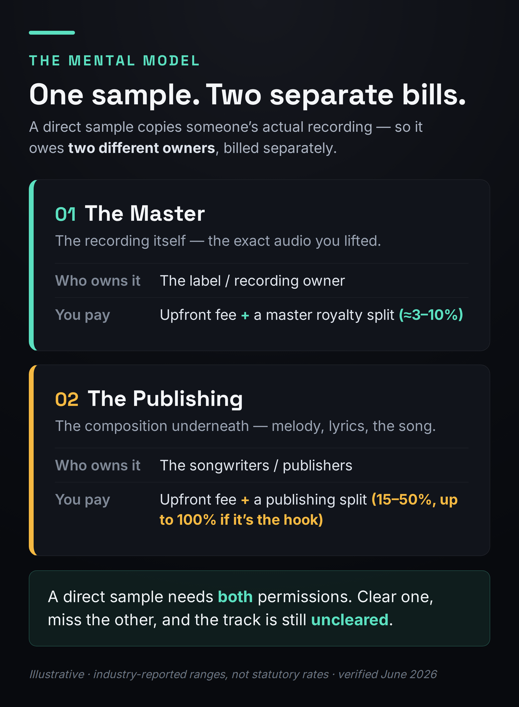

There is no fixed price to clear a sample — no statutory rate, no published table, no “X seconds is free.” Every clearance is a private negotiation across two separate bills: the master (the recording) and the publishing (the song underneath). Industry-reported 2026 ranges put the upfront fee anywhere from a few hundred dollars for an obscure indie record to $50,000 or more for a famous master used prominently, on top of an ongoing royalty split of roughly 15–50% — and up to 100% of the publishing if the sample is your hook. But the headline number is the wrong thing to fixate on. The real question is a decision: clear it, interpolate it, or drop it. This page is about the money and that decision; for the step-by-step mechanics of who to email and how to paper the deal, see how to clear a sample.
This is education, not legal advice — clearance terms are negotiated case-by-case, and a real release should be run past a music attorney. Every dollar figure below is an industry-reported range (sourced to 2026 clearance guides and reporting), not a quote and not a statutory rate. Some links may be affiliate links; that changes none of the guidance.
There’s No Price. There’s a Decision.
Almost every producer who asks “how much does it cost to clear a sample” is hoping for a number they can budget against. The honest answer is that no such number exists, and chasing one is how people waste months and thousands of dollars on a sample they were never going to be able to afford. Unlike a cover song — where U.S. law fixes the mechanical rate and anyone can compulsorily license it — a sample clearance is a private deal the rights holders can decline for any reason, or no reason at all. They can name any price they like. There is no ceiling, no floor, and no obligation to say yes.
So the useful framing is not “what does it cost” but “given what this sample would cost me, what should I do with it?” That reframes a budgeting problem into a decision with three outcomes: clear it (pay for both copyrights and release legally), interpolate it (re-record the part yourself and skip an entire bill), or drop it (replace the sample and keep your whole song). Most of this guide is about how to run that decision on your own track and how to read the dollar figures that drive it — the upfront fee everyone fixates on, and the royalty split almost nobody models, which is usually the part that actually costs you.
One boundary worth setting up front: this page is the money and the decision. It is not the how-to. If your decision lands on “clear it,” the mechanics — identifying the master and publishing owners, finding the right contact at a label or publisher, submitting the request, and getting the agreement in writing — live in the companion guide on clearing a sample step by step. Keep both open; this one tells you whether and what it costs, that one tells you how.
Why Every Sample Is Two Separate Bills
The single most expensive misunderstanding in sampling is thinking you are buying one thing. You are not. Every commercial recording carries two distinct copyrights, owned (usually) by two different parties, and a direct sample uses both — so you owe both, and you negotiate them separately. Miss either one and your track is uncleared no matter how much you paid for the other.

The master is the sound recording itself — the exact audio you lifted. It is almost always owned by a record label (or, for older catalog, whoever now controls it). To use it you need a master use license, and the master owner typically wants an upfront fee plus a small ongoing royalty on your new recording, commonly reported in the 3–10% range. The master is the copyright you can sometimes avoid entirely — more on that below — because you only owe it if you used the actual recording.
The publishing is the composition underneath — the melody, the chords, the lyrics, the part a human wrote. It is owned by the songwriters and their publishers, and there can be several of them on one song. To use it you need permission from every writer or publisher with a stake, and they take a split of your new song’s publishing — an ownership share, not just a fee. This is the copyright you almost never escape: even if you re-record everything yourself, the underlying song is still theirs. Understanding how those publishing shares work is its own subject; the short version lives in music publishing explained and how music royalties work.
There is a complication on the publishing side that quietly multiplies cost: a song often has many writers. The master is usually controlled by one party — the label that released the record — so master clearance, while expensive, is typically one negotiation. Publishing is rarely so tidy. A single famous record can have four, five, or more credited writers, each potentially signed to a different publisher, and you may need a separate yes from every one of them. Each can set their own terms, each can hold up the whole release, and any one of them can refuse. When you read that publishing clearance “runs $2,000–$25,000+ per license,” note the words per license: if four publishers each want a piece, that range can apply four times over. The more hands that touched the original song, the more expensive and slower your clearance becomes — which is itself a reason to favor simpler, less-co-written source material when you have the choice.
The reason this two-bill structure matters so much for cost is that the two bills behave completely differently. The master is mostly a fee — a number you pay and move on. The publishing is mostly a split — a permanent share of everything your song will ever earn. People budget for the fee and forget the split, which is exactly backwards: the split is usually the expensive part. We will price both, but hold onto the distinction, because it is also what makes the single best money-saving move possible.
What Clearance Actually Costs in 2026
With the two-bill model in hand, here are the figures producers and clearance services actually report in 2026 — useful for sanity-checking a quote, useless as a price list. Treat every number as a sourced range that moves with how famous the original is and how central the sample is to your track.
| Cost component | Reported 2026 range | What drives it |
|---|---|---|
| Master upfront fee | ~$2,000–$10,000 (indie) up to $25,000–$50,000+ (famous) | Fame of the recording; how prominent the sample is |
| Master royalty split | ~3–10% of your new master | How load-bearing the sample is |
| Publishing upfront fee | ~$2,000–$25,000+ per license | Negotiated separately from the master |
| Publishing split | 15–50% (up to 100% if it’s the hook) | How much of your song the sample carries |
| “Consideration” / review fee | Sometimes non-refundable | Some publishers charge just to review the request |
| Timeline | 2–6 months, sometimes longer | Major labels, multiple writers, backlogged departments |
It also helps to know the shapes a deal can take, because the structure changes the math as much as the number. A buyout is a one-time flat fee for the right to use the sample — clean, predictable, and the most producer-friendly when you can get it, because there is no ongoing claim on your song. An advance against royalties is an upfront payment that is then recouped from — and continues as — a royalty share, so the upfront number is really a down payment on a permanent split. The most common structure in 2026 is a combination: a smaller upfront fee plus an ongoing royalty percentage. And in some cases the original owner asks for outright co-ownership of your new composition, which is the most expensive outcome of all because it makes them a permanent co-writer of everything the song does. When a quote comes back, the first thing to read is not the dollar figure but the structure: a $5,000 buyout and a $5,000 advance against a 50% split are wildly different deals wearing the same headline number.
Two more variables move the bill in ways producers forget. Territory is one: worldwide rights cost more than a single-territory license, and if you only clear the U.S. you can be exposed the moment the track travels. Timing is the other, and it is the one you control — a track already released with an uncleared sample is the weakest possible negotiating position, because the owner now knows it exists, knows it is earning, and prices accordingly. The same clearance is materially cheaper while the song is still an unreleased file on your drive than it is after it has streams. Clearing early is not just good hygiene; it is a discount you give yourself.
Three factors move every one of those numbers. The first is recognizability: a household-name hook commands far more than a forgotten deep cut, because the owner is pricing against the cultural value you are borrowing. The second is how load-bearing the sample is — a two-second background texture is a different conversation from the four-bar loop your entire chorus rides on. The third is your track’s commercial potential: owners price against what they think you will earn, which is one reason clearing before you have a hit is dramatically cheaper than clearing after.
Watch for the costs that hide outside the headline fee. Some publishers charge a non-refundable advance or “consideration” fee just to review your request — money you do not get back even if they say no. There are also the soft costs of the process itself: most producers running a real clearance end up paying a music attorney to drive it, and that time adds up. None of this is a reason to panic; it is a reason to be sure a sample is worth pursuing before you start spending to ask. And it is the reason the next section exists, because the cheapest legal route is frequently not a clearance at all.
There is no “five-second rule,” no “under eight bars is fine,” and no amount of pitching, chopping, or filtering that turns someone else’s recording into yours. If a sample is recognizable, it needs clearance — full stop. The length of the sample does not determine legality; whether it is identifiable does.
Clear It, Interpolate It, or Drop It
This is the part the cost tables bury. Once you know a sample is not free and not cheap, the move is not to start emailing labels — it is to run the sample through a decision that often saves you an entire bill, or tells you to walk away before you spend a cent. Three questions get you there.

Question one: did you use the original recording? If the sound in your track is literally lifted from someone else’s release, you owe the master and the publishing. But if you only borrowed the idea — you played the melody yourself, programmed the chords, sang the line — then it was never a sample in the first place. It is an interpolation, and you owe the publishing only. That single distinction is worth thousands of dollars, and it is why the next question matters so much.
Question two: can you re-play or re-sing it convincingly? If you used the recording but the part is something you (or a session player or vocalist) could recreate, you can often convert a two-bill sample into a one-bill interpolation by simply re-recording it. You drop the master clearance entirely and negotiate only with the publisher. This is the highest-leverage move in the whole process and it gets its own section below.
Question three: is it worth it, and can you afford the quote? If you genuinely need the original recording — the texture, the performance, the specific sound that can’t be replayed — then you are clearing both copyrights, and the question becomes whether the sample earns its keep against the fee and the split you will be quoted. If yes, you clear both, in writing, before release. If the quote is beyond your budget, or the owner refuses, or it was only ever a background texture, the disciplined answer is to drop it — replace the sample with something cleared or original and keep 100% of your song. A sample you cannot afford is, for practical purposes, an uncleared sample.
The most expensive mistakes happen before any of these questions get asked. The first is building an entire track around a sample you never priced — arranging, mixing, and falling in love with a record whose hook belongs to a famous master you could never afford, so that by the time reality arrives you are emotionally and creatively committed to something you have to tear out. The second is mistaking a casual yes for a clearance: a DM, an email thread, a verbal “sure, go ahead” from someone who may not even control the rights is not a license, and it will not survive a claim. Run the three questions at the sketch stage, when the sample is still load-bearing but easy to swap, not at the master stage when it is welded into the arrangement. Deciding early is free; deciding late is what costs people their releases.
Interpolation: The Single Biggest Money Move
If you remember one thing from this page, make it this: re-recording a part you would otherwise have sampled deletes an entire bill. An interpolation — replaying or re-singing the composition with new performers and a new recording — means you never used the original master, so there is no master license to negotiate, no label to chase, no master royalty split. You still owe the publishing, because the underlying song is still someone else’s, but you have cut the number of parties you negotiate with from two (often more) down to one.
The savings are real and the cost is honest. Publishing clearance for an interpolation is reported in 2026 at roughly $2,000–$25,000+ upfront plus 25–50% of your track’s publishing — cheaper than a full two-copyright clearance, but not free, and the split can still be steep for a major song. What you are buying is leverage and speed: one negotiation instead of two, no need to satisfy a label’s legal department, and a path that stays open even when the master owner flatly refuses to license. When the master is prohibitively expensive, when the owner won’t deal, or when you simply have the players to recreate the part faithfully, interpolation is usually the right call.
Put concrete numbers on it. Say a recognizable hook would clear as a full sample at, illustratively, an $8,000 master buyout plus a 5% master split, and a $10,000 publishing fee plus a 40% publishing split — two parties, two upfronts, two ongoing claims. Interpolate the same hook and the entire master side vanishes: no $8,000 buyout, no master split, no label negotiation. You are left with the publishing only — in this example the $10,000 and the 40%, perhaps negotiated a little differently now that you are not also asking for the recording. You have not made the song free, but you have removed one of the two upfronts and one of the two permanent splits, and you have collapsed a multi-party negotiation into a single one. On an indie budget, that difference is frequently the line between a release that can happen and one that cannot.
The catch is craft, not law. An interpolation only works if the re-performance is convincing — a thin, obviously-fake replay of an iconic line can sound worse than no sample at all, and chasing a perfect recreation can eat the very budget you saved. Be honest about whether you, or a player you can afford, can actually deliver the part. When you can, interpolation is the most reliable lever in this entire guide. When you cannot, forcing it is just a different way of damaging the track.
It is not a loophole, and it is not always cheaper than it looks. If the part you are recreating is the song — the signature hook everyone recognizes — the publishers know it, and they can demand a large publishing split anyway, because their composition is still carrying your record. Interpolation changes which bills you pay, not the underlying truth that a recognizable borrowed idea owes the people who wrote it. What it reliably does is remove the master from the equation, which is frequently the more expensive and more obstinate of the two parties. For the broader picture of what sampling versus interpolation actually means musically, see what sampling is and the practical craft in how to chop samples.
The Upfront Fee Is the Cheap Part
Here is the number almost no clearance guide models honestly. When a rights holder takes a 50% publishing split, that is not a fee you pay and forget — it is half of everything your song’s publishing will ever generate, for as long as the track earns. The upfront buyout is a one-time line item. The split is a permanent co-ownership of your work. Producers budget hard for the first number and barely think about the second, which is exactly backwards.
![Worked example contrasting the upfront fee with the lifetime publishing split for one cleared hook. An illustrative upfront buyout of $8,000 is paid once. If the track earns $120,000 in publishing over its life, the rights holder's 50 percent split is $60,000, paid on every payout forever. A bar comparison shows the $8,000 upfront as a small bar against a much larger $60,000-plus lifetime split. Real case: on Juice WRLD's interpolation of Shape of My Heart, Sting reportedly took about 85 percent of the publishing.](../images/sample-clearance-upfront-vs-lifetime.png)
Walk the math. Imagine you clear a hook for an $8,000 upfront buyout — a real-feeling number for a recognizable but not stratospheric sample. Now imagine the track does well over its life and earns, hypothetically, $120,000 in publishing across streaming, sync placements, and radio over the years. A 50% publishing split hands the original owners $60,000 of that — seven and a half times the upfront fee, paid out slowly, forever. The fee was the cheap part. The split was the expensive part, and you agreed to it on day one without feeling it.
The clearest real-world illustration is an interpolation, not a sample, which makes the point even sharper. When Juice WRLD’s producer interpolated Sting’s “Shape of My Heart,” Sting reportedly ended up with around 85% of the publishing — the master was free to skip, but the song was so recognizable that the writer’s share dwarfed everything else. That is the lifetime split in its most extreme form: a single creative decision quietly reassigning most of a hit’s publishing to someone who wrote the part decades earlier. It was, by all accounts, still worth it — which is the right lesson. A large split on a song that becomes a hit can be a good trade. A large split on a song that goes nowhere is just a smaller slice of nothing. The point is to see the split before you sign it, and price the sample against the life of the track, not the day of release.
Run the math the other direction too, because it is the more common outcome. Most tracks do not become hits. If the same song earns $4,000 in publishing over its life instead of $120,000, that 50% split is worth $2,000 — and you may well have paid an $8,000 upfront to acquire a permanent claim on a song that never recouped the fee, let alone justified the split. This is the quiet tragedy of over-clearing: a large upfront on a sample-heavy track that goes nowhere is money spent to give away a share of nothing. The split only becomes expensive if the song succeeds, but the upfront is gone either way — which is exactly why the cheap, reversible moves (interpolate, or use pre-cleared material) are so often the right ones for music whose commercial future is unknown, which is to say almost all of it.
One more place the split bites that producers miss: sync. If a supervisor wants your track for a film, ad, or game, the sync fee is typically split along the same publishing ownership lines — so a 50% publishing split does not just halve your streaming pennies, it halves the single largest checks your song may ever earn. A sync placement can be worth more than years of streams, and handing half of it to a sample owner is a real cost that never shows up in a clearance quote. When you weigh a split, weigh it against the best case for the song, not just the steady-state streaming case.
What It Costs to Get It Wrong
Every cost above assumes you clear the sample. Skipping clearance has its own price, and it is the one that ends careers. Releasing a track with an uncleared, recognizable sample is copyright infringement, and the consequences are not abstract risk — they are specific, mechanical, and asymmetric against you.
It helps to understand how these claims actually surface, because it explains the timing. Labels and publishers monitor for uses of their catalog, and platforms run automated content-matching that can flag a recognizable recording without anyone listening. The unsettling part is that a claim almost never lands while your track is invisible — it lands once the song starts working, once it has the streams and the playlist placement that make it worth someone’s attention. So the worst-case scenario is not “I might get caught early and quietly fix it.” It is “the one track that finally breaks for me is the one that gets pulled and drained,” at the exact moment it was about to pay off. The enforcement risk is correlated with success, which is precisely backwards from how most people imagine it.
The first is takedowns. When a rights holder files a claim, platforms remove your track, and you lose more than the song. You lose the streams it was accumulating, the playlist placements it had earned, and the algorithmic momentum that was feeding it new listeners — momentum that does not come back when the track does. For an independent artist, a takedown at the wrong moment can erase months of slow growth overnight. If you want to understand how fragile that momentum is, the mechanics are in streaming royalties explained and music distribution explained.
The second is the one producers underestimate most: revenue seizure. A rights holder can demand all of the revenue your track has generated — not their percentage of it, not the split they would have negotiated, but the entire amount. You do not get to keep your share of an infringing release. You can spend a year building a song, finally see it earn, and hand over every dollar of that earning because you skipped a clearance that might have cost a fraction of it. On top of that sits the possibility of legal action, where the costs are measured in years and attorneys’ fees rather than royalties.
Clearing costs a known, negotiable amount you can plan around. Not clearing risks an unknown, uncapped loss — 100% of revenue, plus takedowns, plus legal exposure — that arrives precisely when the track is finally working. That asymmetry is why the disciplined move on an unaffordable sample is to interpolate or drop it, never to release and hope. For where copyright protection actually begins, see how to copyright your music.
Is This Sample Worth Clearing?
Cost only answers half the question. The other half is whether this particular sample earns the fee, the split, and the months of waiting — and for most independent producers, on most samples, the honest answer is no. That is not a failure; it is the math working correctly. A recognizable sample from a famous master is frequently prohibitively expensive for an indie release, and the right response is to design the track so it does not depend on something you cannot afford.
The biggest lever you control is timing. Clear before you release, not after. An unreleased track gives you all the negotiating leverage and the lowest price, because the owner is pricing against potential. The moment a track gains traction with an uncleared sample, you have handed the rights holder every card: they know it is working, they know you are exposed, and the quote reflects it. Starting the clearance the day you decide to use a sample — not the week before your release date — is the single cheapest thing you can do.
It is worth being blunt about the indie budget reality, because the cost ranges on this page can read as abstract until you hold them against an actual release budget. If you have a few hundred dollars to put behind a song, a famous master is simply not on the menu — not because the system is unfair, but because the owner is pricing against a commercial upside your release does not have. Pretending otherwise leads to months of unanswered emails and a release date that slips and slips. The producers who thrive under this constraint do not treat it as a wall; they treat it as a brief. They reach for deep, obscure, single-writer source material where an “all-in” clearance with one cooperative owner is actually negotiable, or they interpolate, or they build from pre-cleared and royalty-free libraries and keep every cent of their publishing. A small budget does not mean you cannot sample legally. It means you cannot sample anything legally — and choosing the right thing to sample is a creative skill, not a compromise.
If clearance is not viable, the alternatives are genuinely good. Interpolation removes the master bill, as covered above. Pre-cleared libraries remove clearance altogether: services like Tracklib license real records for sampling with the rights already handled, and royalty-free sample platforms let you keep 100% of your publishing — the trade-offs are laid out in are Splice samples royalty-free and the licensing landscape in beat licensing explained. And if you are building beats around samples to sell, the clearance question changes shape again — selling beats online walks through what you can and cannot legally pass on to a buyer. The producers who never get burned are not the ones with the biggest clearance budgets; they are the ones who decided before the session whether a sample was a clear, an interpolation, or a no.
When the Answer Is “Clear It”
Sometimes the sample is worth it. The recording is irreplaceable, the budget is real, the song is built to last — and the decision lands cleanly on “clear it.” When it does, the cost questions on this page hand off to the process questions on the companion guide: who exactly owns the master and the publishing, how to reach the right person at the label or publisher, what to put in the request, and how to get a clearance that actually holds up. That full walkthrough is in how to clear a sample, step by step. The AI-era version of these questions — clearing and licensing when generative tools are in the mix — is in AI music licensing explained, and the close cousin of sampling, releasing someone else’s song, is in how to release a cover song.
This is also where MusicProductionWiki is building something for the moment your decision lands on “clear it.” ClearCheck — our in-house U.S. sample-clearance front door — is designed to take the “how much, and is it worth it” question you just worked through and turn it into a real risk assessment and a path to actually clearing the sample, without leaving you to cold-email a major label’s legal department alone. The decision is yours; the legwork doesn’t have to be. If budgeting the rest of a release is on your mind too, what it costs to mix and master a song is the natural next number to pin down.
Run the sample down the three questions, price it against the life of the track and not just release day, and remember the asymmetry: clearing is a known cost, not clearing is an uncapped one. This is education, not legal advice — clearance terms are negotiated case-by-case, and a real release should be reviewed by a music attorney.
Put It Into Practice: 3 Exercises
- Pick a famous sample-based song you love. Identify the master owner from the original record’s label credits (try Discogs or the streaming page).
- Identify the publishing owners by searching the original song in the ASCAP, BMI, or SESAC database — note every co-writer and publisher listed.
- Write down, in two columns, who would have to say yes on the master side and who on the publishing side. The point: feel how a single sample becomes two separate negotiations, often with more than two parties.
- Take a sample you are actually considering for a track. Answer question one: did you use the original recording, or could the part be re-played?
- If it could be re-played, sketch the interpolation: what would you re-record, and who would still need to clear on the publishing side?
- Estimate, using the ranges in this guide, the rough upfront and split for both paths — clear-both versus interpolate. Decide which you would actually pursue, and write one sentence on why. If neither is affordable, name what you would replace the sample with.
- Assume a 50% publishing split and an $8,000 upfront on a hypothetical clear. Pick a plausible lifetime publishing figure for a modestly successful track and calculate what the split actually costs over that life.
- Now redo it for a 25% split (a common interpolation outcome) and for a 100% split (a hook). Compare all three against the upfront fee.
- Write down the stream or revenue level at which clearing this sample stops being worth it to you. That number — your walk-away point — is the most useful thing you can take into any clearance negotiation.
Frequently Asked Questions
There is no fixed price. Industry-reported 2026 ranges put the upfront fee anywhere from a few hundred dollars for an obscure indie record to $50,000 or more for a famous master used prominently, with a common band around $2,000–$25,000 per license — and that is before the ongoing royalty split of roughly 15–50% (up to 100% of the publishing if the sample is your hook). Master and publishing are billed separately. Every figure is a sourced range, not a quote; the rights holders set the actual price and can refuse entirely.
Because a recording contains two separate copyrights: the master (the recording, owned by the label) and the publishing (the composition, owned by the songwriters and publishers). A direct sample uses both, so you clear both, often with different owners. If you only clear one, the track is still uncleared. The exception is interpolation, where re-recording the part yourself removes the master and leaves only the publishing.
Usually, yes — because it removes the master bill entirely. You re-record the part with new performers, so there is no master license to buy and no label to negotiate with. You still clear the publishing, reported around $2,000–$25,000+ upfront plus 25–50% of your publishing in 2026. It is not free, and for a signature hook the publishers can still demand a large split, but it cuts your negotiation from two parties to one and stays open even when a master owner refuses.
No. There is no “five-second rule” and no safe number of bars. If a sample is recognizable, it needs clearance, regardless of length. Pitching, chopping, filtering, or reversing it does not remove the original copyright either — it is still a copy of someone else’s recording and composition. The test is whether the sample is identifiable, not how long it runs.
It is copyright infringement, and the consequences are real: platforms take the track down when a rights holder files a claim (costing you streams, playlist placements, and algorithmic momentum), and the owner can demand all of the revenue your track has generated — not their percentage, the entire amount — plus possible legal action. The asymmetry is the point: clearing is a known cost; not clearing is an uncapped one that lands exactly when the track starts working.
Because the upfront fee is paid once, but the split is a permanent share of everything your song earns. A 50% publishing split on a track that does well can cost many times the upfront fee over the life of the song, paid out slowly and forever. Producers budget for the fee and forget the split, which is backwards — price a sample against the lifetime of the track, not just release day.
Plan for 2 to 6 months from first contact to signed agreements, and sometimes longer. Major labels and publishers move slowly, and multiple rights holders — several co-writers, separate publishers, a label on the master — each add time. Start the moment you decide to use a sample, never near your release date; a rushed clearance hands the rights holder all the leverage and usually a higher price.
Two clean routes. Use a pre-cleared sampling service such as Tracklib, which licenses real records with the rights handled, or use royalty-free sample libraries where you keep 100% of your publishing. The other route is to write the part yourself — an original melody or texture owes nobody. Interpolation reduces but does not eliminate cost, since you still clear publishing; only pre-cleared or original material removes clearance completely.